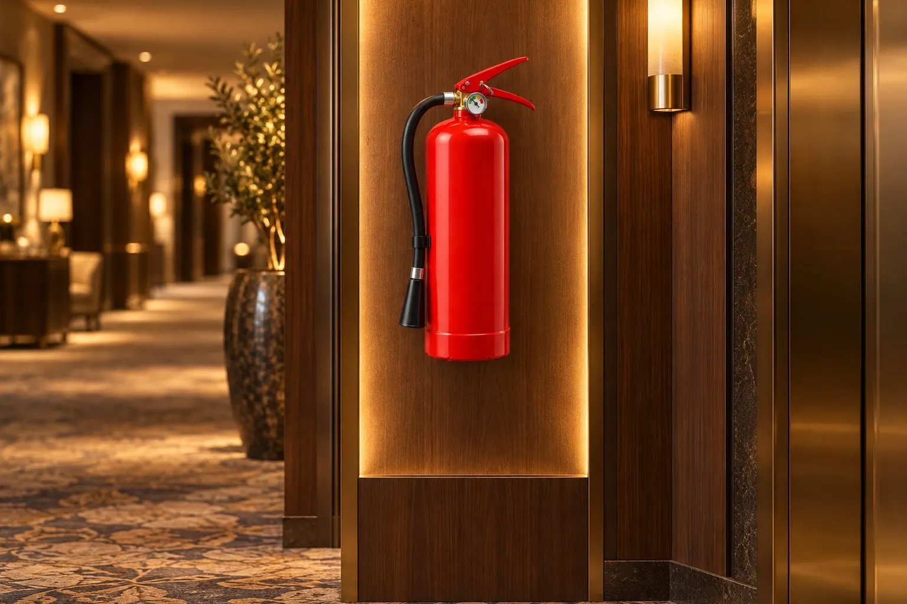

Ürünler · Yangın
Yangın söndürücüler
Kuruma ve mekâna uygun söndürücüyü seçer, kurar ve bakımını üstleniriz. 1 kg araç tipinden 50 kg tekerlekliye kadar.

Ürünler
27 model
Fiyat ve stok için WhatsApp'tan yazın.
1 kg FM-200 pano tipi söndürücü
1 kg KKT araç tipi yangın söndürücü
2 kg FM-200 pano tipi söndürücü
2 kg KKT araç tipi yangın söndürücü
5 kg CO₂ yangın söndürücü
6 kg FK-5-1-12 temiz gazlı söndürücü
6 kg FM-200 pano tipi söndürücü
6 kg ıslak kimyasal davlumbaz söndürücü
6 kg KKT sprinkli söndürücü
6 kg KKT yangın söndürücü
6 kg köpüklü yangın söndürücü
9 kg köpüklü yangın söndürücü
10 kg CO₂ yangın söndürücü
12 kg KKT sprinkli söndürücü
12 kg KKT yangın söndürücü
12 kg köpüklü yangın söndürücü
25 kg KKT tekerlekli yangın söndürücü
25 kg köpüklü tekerlekli yangın söndürücü
50 kg KKT tekerlekli yangın söndürücü
50 kg köpüklü tekerlekli yangın söndürücü
Acil aydınlatma armatürü
- Acil aydınlatma
Duman dedektörü
- Algılama
Yangın ihbar butonu
- Algılama
Yangın battaniyesi
- Yangın battaniyesi
Yangın dolabı
- Yangın dolabı
Yangın kapısı (çift kanat, 60 dk)
- Yangın kapısı
Yangın kapısı (tek kanat, 60 dk)
- Yangın kapısı
Hangi söndürücü nereye?
Söndürücü, mekândaki yanıcı maddeye göre seçilir. Yanlış tip yangını söndürmeyebilir ya da zarar verebilir; bu yüzden seçim keşifle yapılır.
- KKT (kuru kimyevi toz): katı, sıvı ve gaz yangınlarında kullanılan genel amaçlı söndürücü. Ofis, depo, koridor ve araçlar için yaygın seçim.
- CO₂ (karbondioksit): iz bırakmaz. Elektrik panoları ve elektronik cihazların bulunduğu alanlar için.
- Köpüklü: katı ve sıvı yakıt yangınlarında soğutarak ve üstünü örterek söndürür.
- FM-200 ve FK-5-1-12 (temiz gaz): kalıntı bırakmaz. Pano içi, sunucu ve arşiv odaları için.
- Islak kimyasal: mutfak davlumbazı ve kızartma yağı yangınları için.
- Sprinkli ve tekerlekli: kazan dairesi, otopark ve geniş alanlar için otomatik ya da yüksek kapasiteli seçenekler.
Satıştan sonra
Söndürücü kurulduktan sonra da işimiz sürer: yangın tüpü dolumu ve periyodik kontrol ve bakım için aynı ekip sahaya gelir. Her tüpün etiketi ve kaydı tutulur.
Bayilikler
CAS, TEM, HANA ve GÜNAŞ bayisiyiz. Ürün ve kapasite seçiminde kararsız kalırsanız mekânın fotoğrafını WhatsApp'tan gönderin, uygun tipi birlikte belirleyelim: 0533 407 75 57.